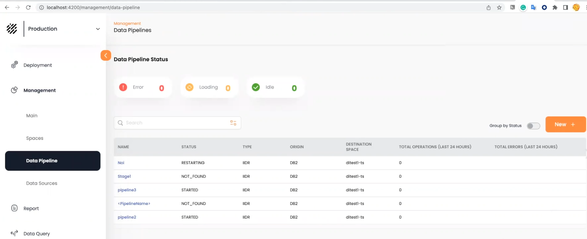
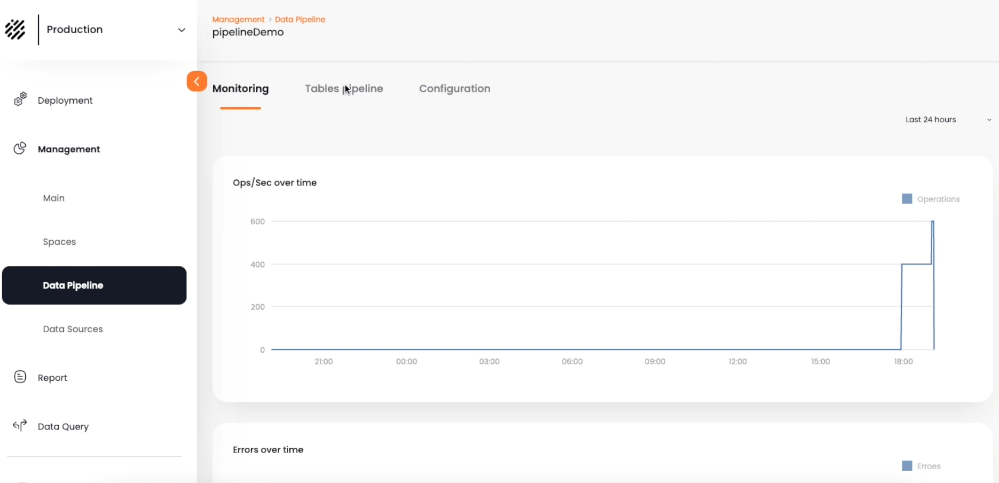
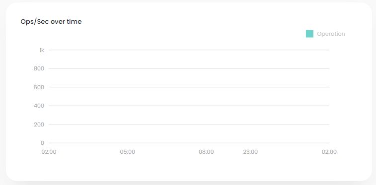
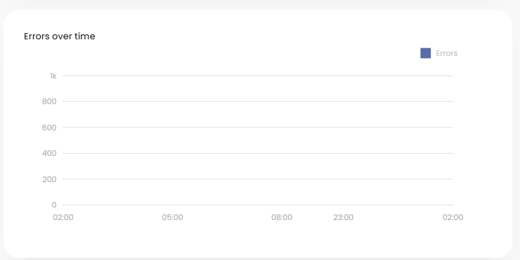
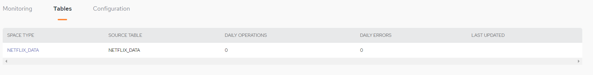
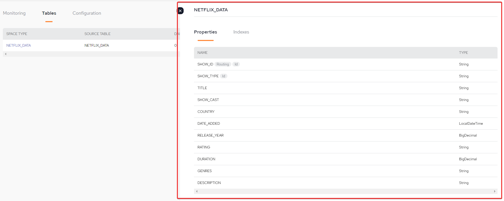
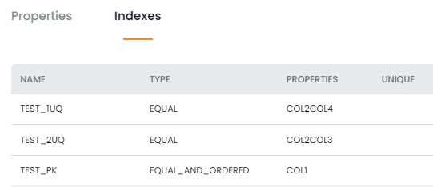

The Data Pipeline Status screen shows the status of the existing data pipelines. You can see details of a pipeline by clicking on its name in the list.
The New + button allows you to create a new pipeline. See

Error – pipeline is not available because of one of the following conditions: not found/connection error/not started/started but not running/loading stopped/suspended
Loading – pipeline is in the process of being configured
Idle – pipeline is configured and the data integration is available
Group by Status – toggle to display the list of pipelines grouped by the pipeline status
NAME – name assigned to the pipeline
STATUS – one of the following conditions: started/stopped/not starting/restarting/not found
TYPE – the connection type for the pipeline, for example, IIDR
ORIGIN – data source type from the System of Record, e.g. DB2
TOTAL OPERATIONS (LAST 24 HOURS) – number of operations performed by the pipeline in the last 24 hours
TOTAL ERRORS (LAST 24 HOURS) – number of error operations performed by the pipeline in the last 24 hours
Click on the pipeline name to view details of the pipeline. Three tabs are available: Monitoring, Tables, and Configuration:
The Monitoring tab shows a variety of real-time pipeline metrics.

Last 24 hours – select the timeframe for the following statistics
Ops/Sec over time – the average number of operations per second

Errors over time – the average number of errors per second

The Tables pipeline tab shows details of the object types in the pipeline.

SPACE TYPE – name of the Space. This is initially the same as the source table name in the System of Record, but can be changed when the pipeline is defined.
SOURCE_TABLE – The name of the source table in the System of Record. This will be the same as the Object Type field, unless you changed the Object Type name when you defined the pipeline.
DAILY OPERATIONS – the number of daily CRUD operations performed on the table
DAILY ERRORS – the number of daily CRUD operations with errors performed on the table
LAST UPDATED – the date that the pipeline configuration was created or updated
Click on the object type name to see details of the object type.
The Property tab appears as follows:

Name – name of the object property (column)
Type – data type of the object property
The Indexes tab appears as follows:

NAME – name of the index
TYPE – index type
PROPERTIES – the object properties that comprise the index
UNIQUE – indicates if unique or non-unique values are allowed for the index
The Configuration tab shows pipeline configuration information. The data is read-only when the pipeline is running.